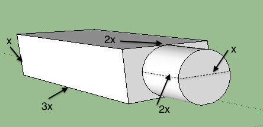

Practice EXAM 1
Exam Rules
- The exam is over at 1:10
- Spend the last 5 minutes uploading your code or making sure it is on the USB drive
- Rename the folder code to lastName_firstName
- Develop your solutions using the Bluej starter projects located in the code folder.
- You may use your textbook and material on your computer
- You may NOT communicate with anyone during the exam.
- You may NOT use the work of anyone else without attribution.
- You may NOT open any web sites except Canvas to upload your files
- The proctor will randomly inspect laptops. If your laptop is inspected, you need take the hands off the keyboard immediately.
- Upload all the .java files at one time
- Turn in the USB if you can not upload to Canvas
1. Complete the StringUtility1 class by implementing this methods
- public String middeLetter(String word) - Divide the length of the String by 2 and return the character at that index. That will be the middle character if the length is odd or the character to the right of middle if the length is odd.
You can assume the string has at least 2 characters
2. Complete StringUtility2 class by implementing this method
- public String getReplacement (String word) In the given string, replace s with $ and i with 1.
3. Complete StringUtility3 class by implementing this method
public String lastTwo(String word) - return the last two characters of the String
You can assume the string has at least 2 characters
4. The planet Java has some very strangely shaped buildings - one is shown below along with its dimensions. You are to complete the Building class by implementing the surfaceArea method.
We want to paint the building and so have to know its surface area. Note that the bottom is not included in the surface area to be printed and neither is the opening from the cylinder to the rectangular solid.
The surface area is the surface area of the box + the surface area of the cylinder
(2x * 3x) +2(x * 3x) + 2(2x * x)) + (x2 * π + 2π*x*2x) =
6x2 + 6x2 + 4x2 + π x2 + 4πx2 = 16x2 + 5πx2
(Don't spend time trying to figure this out. Just use the formula - even if I made a mistake - use this formula)
Use Math.PI

5. Complete the class Number. A number has a constructor that takes a double. It has a method
- public String getMagnitude() returns the String "small" if the absolute value of the number is < 1. It returns "large" is the absolute value of the number is greater than 1,000,000. Otherwise it returns "average" Make the word all lowercase.
6. Consider the given class CatStore. Write class CatStoreTester with a main method to do the following
- Create a new cat store with 11 cats, 6 of whom are expecting
- Sell a cat that is expecting
- Print out the fraction of cats that are expecting (don't use 10 and 5. Use the methods)
- Have a cat give birth to a litter of 6 kittens
- Have a cat give birth to a litter of 3 kittens
- Print out the average number of kittens per litter (in the average, include fractional kitten)
7.Complete the given class to draw a image with the following elements
- a line with starting point at 10, 10 and end point at 60,10.
- a circle with upper left had corner at 25, 10 and radius of 10. Fill it with the predefined color red
- a rectangle with upper left hand corner at 25, 30 and a width or 20 and a height of 40